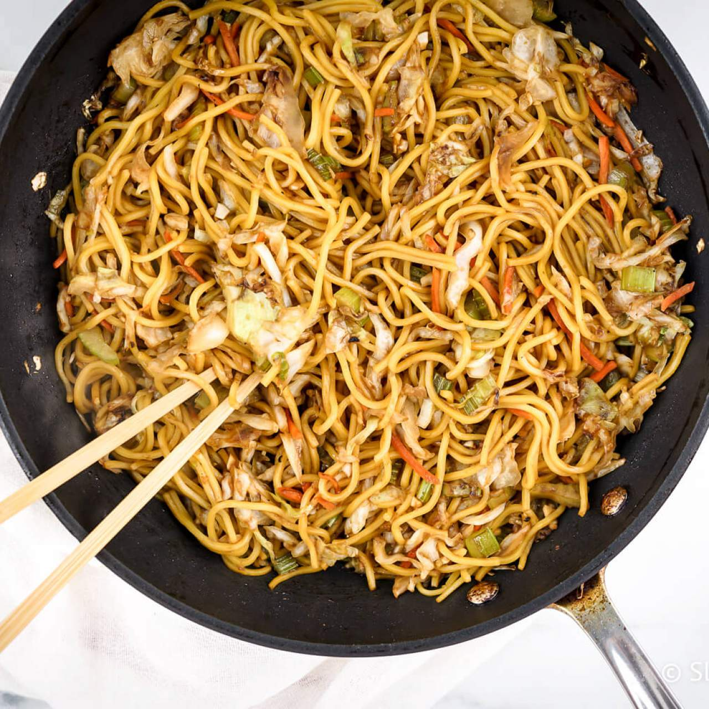

Chow Mein

Delicous, savoury, and filling
Chow mein is a perfect meal for large groups and families. Featuring
pan fried noodles coated in sauce and mixed with onions and cabbage,
this dish is a go-to for those who need to make a lot of food with
little effort.
When ordering restaurant-style chow mein, the dish includes a large
amount of oil and sodium. This recipe is made to be healthier while
also having an authentic taste.
Ingredients
- 4 oz. fresh yakisoba noodles
- 1/4 cup low-sodium soy sauce
- 4 cloves of garlic, minced
- 1 tbsp. brown sugar
- 2 tsp. ginger minced
- 1/4 tsp. ground pepper
- 1 onion, diced
- 2 celery ribs, chopped
- 4 cups of shredded cabbage
Steps
- Prepare the yaki-soba noodles according to the package directions.
Do not use a seasoning package if included. For fresh noodles,
just add them to boiling water for 1-2 minutes until they separate
and become tender. Dried noodles usually need to be boiled for
4-5 minutes.
- Meanwhile, mix together the soy sauce, brown sugar, ginger, garlic,
and pepper.
- Heat the olive oil over medium-high heat. Add the onion and celery
and cook for 3-4 minutes.
- Add the cabbage and cook for 2 minutes until just tender.
- Add the noodles and the sauce. Cook for 2-3 minutes, stirring often.
Taste and season if needed with additional soy sauce or pepper.